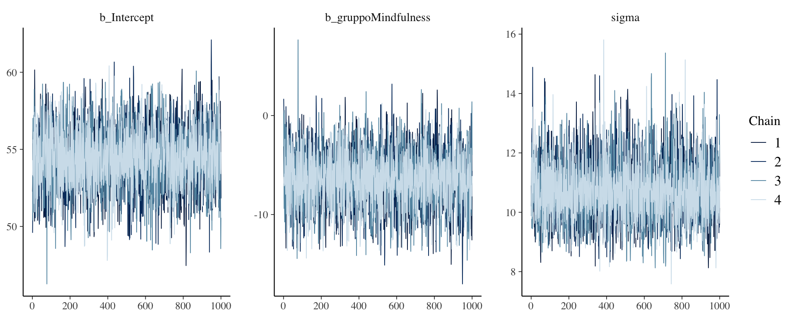
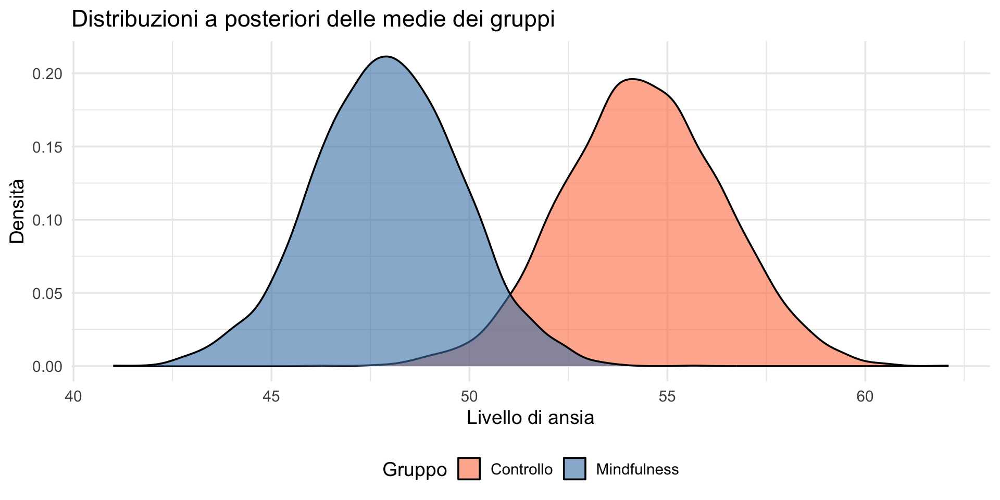
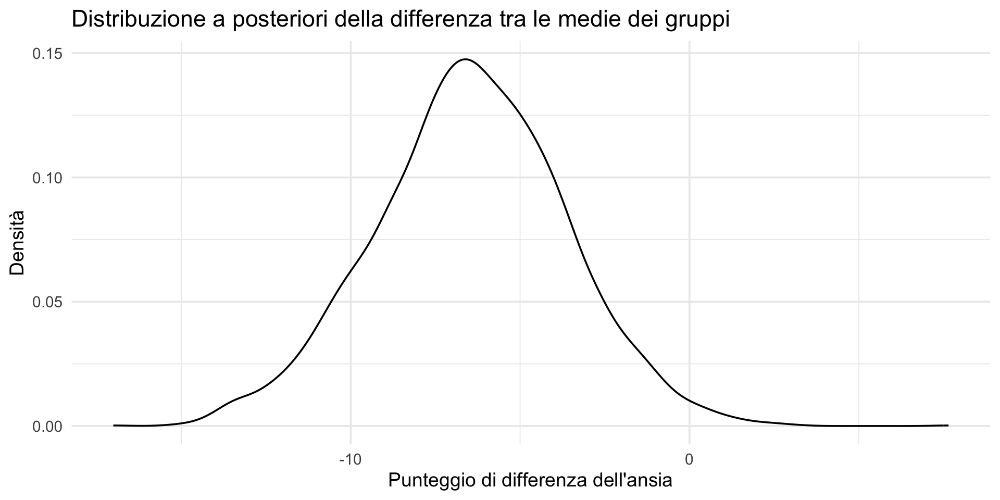
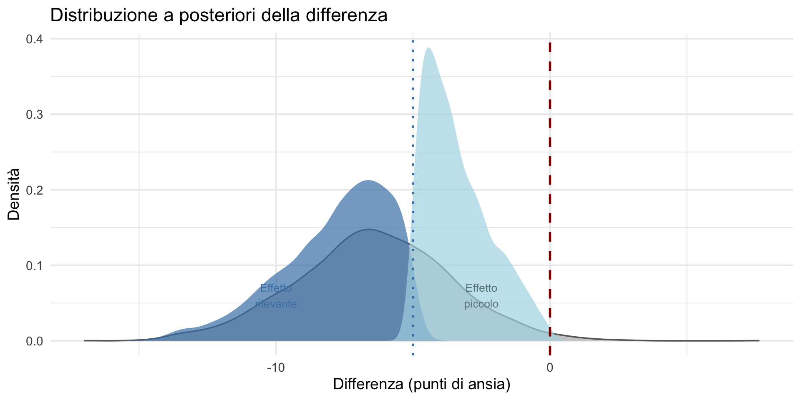
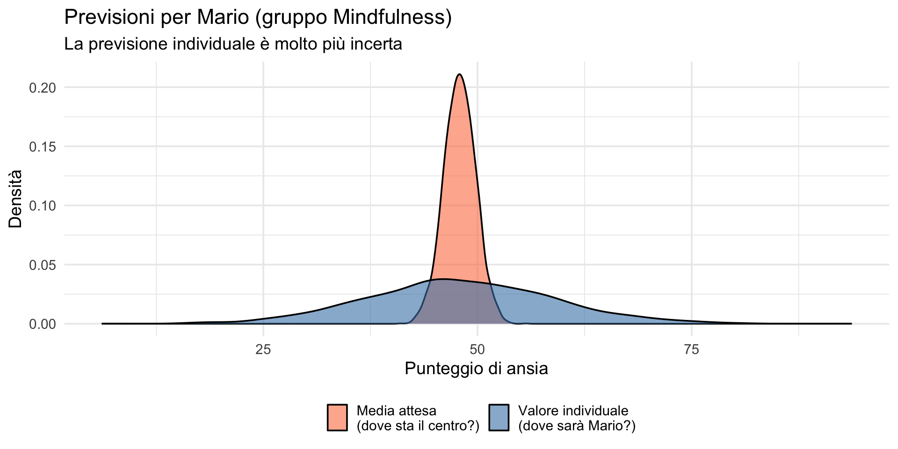
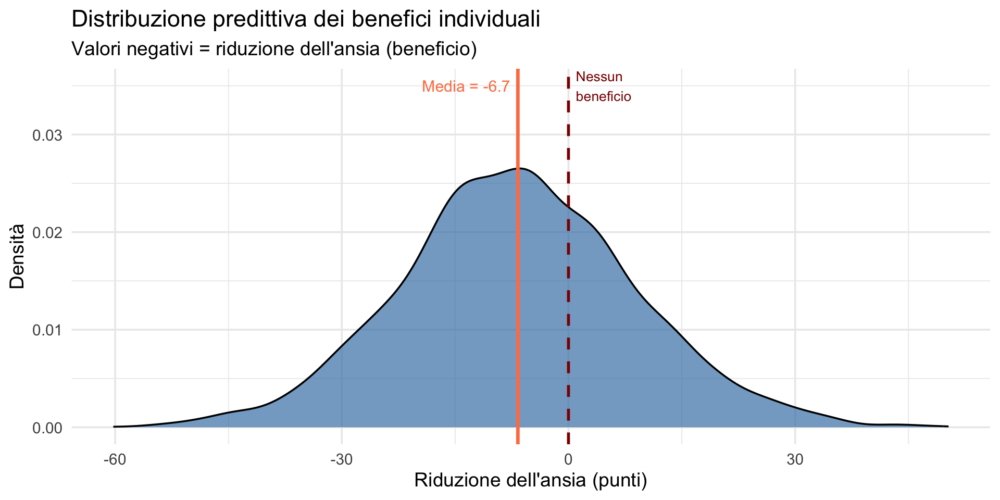

![]()
# Ricreiamo i dati dello studio
set.seed(123)
n_controllo <- 30
ansia_controllo <- rnorm(n_controllo, mean = 55, sd = 12)
n_trattamento <- 30
ansia_trattamento <- rnorm(n_trattamento, mean = 46, sd = 11)
dati <- data.frame(
ansia = c(ansia_controllo, ansia_trattamento),
gruppo = factor(c(rep("Controllo", n_controllo),
rep("Mindfulness", n_trattamento)))
)Confronto tra due gruppi
Implementazione bayesiana e previsioni individuali — Segmento 2
21 febbraio 2026
Obiettivi
- Implementare il confronto tra due gruppi con brms.
- Interpretare i risultati del modello bayesiano.
- Calcolare la distribuzione predittiva per nuovi pazienti.
- Distinguere tra incertezza epistemica e variabilità aleatoria.
- Comunicare i risultati in modo clinicamente utile.
Parte 1: riprendiamo i dati
Lo studio sulla mindfulness
Continuiamo con l’esempio del segmento precedente, dove abbiamo confrontato l’ansia tra gruppo Controllo e Mindfulness e visto quanto la variabilità individuale supera la differenza tra le medie.
Riepilogo dei dati
Parte 2: il modello bayesiano con brms
Specificazione del modello
Cosa fa brms “dietro le quinte”
La stessa procedura che abbiamo visto nella Lezione 24 per la regressione:
- traduce la formula R in codice Stan;
- genera i prior di default se non specificati;
- esegue il campionamento MCMC (4 catene, 2000 iterazioni ciascuna);
- restituisce la distribuzione a posteriori dei parametri.
Diagnostica della convergenza
Estimate Est.Error Rhat Bulk_ESS
Intercept 54.415104 1.93826 1.001144 3916.756
gruppoMindfulness -6.510058 2.74072 1.000296 3750.254Criteri di convergenza:
- \(\hat{R} \approx 1.00\) → le catene hanno raggiunto la stessa distribuzione;
- ESS > 400 → campione effettivo sufficiente.
Trace plots

Catene che si sovrappongono → buona convergenza.
Interpretazione dei coefficienti
Estimate Est.Error Q2.5 Q97.5
Intercept 54.415104 1.93826 50.57089 58.347790
gruppoMindfulness -6.510058 2.74072 -12.00755 -1.128919Significato:
Intercept(54.4) = media attesa per il gruppo Controllo;gruppoMindfulness(-6.5) = differenza rispetto al controllo.
Le medie dei due gruppi
Estraiamo i campioni a posteriori:
# A draws_df: 6 iterations, 1 chains, and 6 variables
b_Intercept b_gruppoMindfulness sigma Intercept lprior lp__
1 55 -9.0 9.9 50 -6.5 -231
2 57 -10.9 10.0 52 -6.5 -231
3 51 -1.5 11.3 50 -6.6 -232
4 55 -5.1 11.9 52 -6.7 -231
5 54 -1.1 12.4 53 -6.8 -234
6 55 -4.9 13.2 53 -6.9 -234
# ... hidden reserved variables {'.chain', '.iteration', '.draw'}Interpretazione dei parametri
b_Intercept: media del gruppo Controllo (condizione di riferimento);b_gruppoMindfulness: differenza tra la media del gruppo Mindfulness e il gruppo Controllo.
Medie e intervalli di credibilità
Calcoliamo le medie dei due gruppi:
Intervalli di credibilità per ciascuna media:
Media gruppo Controllo: 54.4 [ 50.6 , 58.3 ]Media gruppo Mindfulness: 47.9 [ 44.1 , 51.8 ]Visualizziamo le posterior delle medie

Parte 3: la differenza tra le medie
La distribuzione di β
Otteniamo i campioni a posteriori di \(\beta\):
Visualizzazione

Descrizione della distribuzione a posteriori di \(\beta\)
Valore atteso della differenza (Mindfulness - Controllo):
Intervallo di credibilità al 95%:
Probabilità dirette sulla differenza
Probabilità che il trattamento sia efficace (riduca l’ansia):
Probabilità di un effetto clinicamente rilevante (> 5 punti):
Visualizziamo le probabilità

Parte 4: la distribuzione predittiva individuale
Cos’è la distribuzione predittiva?
Nel segmento precedente abbiamo visto che i dati individuali sono molto variabili. Ora vogliamo rispondere alla domanda — la stessa della Lezione 23 sulla distribuzione predittiva a posteriori:
“Dato il modello stimato, quale punteggio di ansia ci aspettiamo per un singolo paziente?”
La risposta è la distribuzione predittiva: una distribuzione di probabilità sui possibili esiti.
Una precisazione terminologica
Quando parliamo di “previsione per un nuovo paziente”, non intendiamo necessariamente un paziente che non abbiamo ancora osservato.
Intendiamo: un paziente con le stesse caratteristiche di quelli nel nostro campione.
Potrebbe essere:
- un paziente futuro;
- un paziente già osservato (per verificare il modello);
- un paziente ipotetico.
Partiamo da un singolo paziente: Mario
Immaginiamo Mario, un paziente che sta per iniziare il trattamento di mindfulness.
Domanda: quale punteggio di ansia ci aspettiamo per Mario dopo il trattamento?
Preparazione per la previsione individuale
Stiamo per utilizzare il nostro modello statistico per fare una previsione personalizzata: vogliamo stimare quale potrebbe essere il livello di ansia di un individuo specifico (che chiameremo “Mario”) se fosse assegnato al gruppo di trattamento Mindfulness.
Perché un data frame “vuoto”?
Nella statistica bayesiana (e in molti modelli di regressione), dobbiamo fornire i dati nello stesso formato utilizzato per costruire il modello originale.
Anche se Mario non è stato effettivamente osservato nei dati originali, dobbiamo inserirlo in un formato compatibile.
Analisi del codice:
data.frame()→ crea una nuova tabella dati.gruppo = factor(...)→ crea una variabile “gruppo” di tipo fattore."Mindfulness"→ il valore che vogliamo assegnare a Mario.levels = levels(dati$gruppo)→ molto importante: assicura che i livelli del fattore siano esattamente gli stessi utilizzati nel modello originale.
Importanza dei livelli del fattore
Quando un modello statistico viene addestrato su dati categorici (come “Controllo” e “Mindfulness”), mantiene internamente una mappatura tra le etichette e i codici numerici. Specificare levels = levels(dati$gruppo) garantisce che:
- la codifica di “Mindfulness” sia identica a quella usata durante il fit del modello;
- senza questa specifica, R potrebbe creare nuovi livelli o riordinarli in modo diverso;
- il modello potrà interpretare correttamente il dato di input.
Analogia pratica
Possiamo pensare a questo come ad un modulo per l’ammissione ospedaliera:
- Nome paziente: Mario.
- Gruppo di trattamento: Mindfulness.
- Tutti gli altri dati: non specificati (il modello li stimerà).
Prossimo passo
Una volta creato questo data frame con Mario, lo passeremo alla funzione predict() del nostro modello per ottenere:
- la distribuzione predittiva del suo livello d’ansia;
- l’incertezza associata a questa previsione.
Questo è il primo passo verso previsioni personalizzate basate sul modello.
Due tipi di previsione per Mario
La stessa distinzione che abbiamo appreso nella Lezione 25 tra inferenza sulla media e previsione individuale:
Qual è la media attesa per pazienti come Mario?
Questa domanda riguarda il parametro \(\mu\) (la media del gruppo).Quale sarà il punteggio specifico di Mario?
Questa domanda riguarda il valore individuale \(X\).
Sono domande diverse, con risposte diverse.
Previsione della media: fitted()
Iniziamo con la previsione della media per pazienti come Mario.
Estimate Est.Error Q2.5 Q97.5
[1,] 47.90505 1.934854 44.11001 51.75Interpretazione:
- la media attesa per pazienti nel gruppo Mindfulness è circa 48 punti;
- l’incertezza (Est.Error \(\approx\) 2) riflette solo la nostra incertezza sui parametri.
Previsione individuale: predict()
Consideriamo la previsione del valore individuale per Mario:
Estimate Est.Error Q2.5 Q97.5
[1,] 47.85986 10.92806 26.07217 69.27187Interpretazione:
- ci aspettiamo che Mario abbia un punteggio attorno a 48;
- ma l’incertezza (Est.Error \(\approx\) 11) è molto maggiore;
- l’intervallo 95% va da circa 26 a 69 punti.
Perché l’incertezza è così diversa?
CONFRONTO PER MARIO:Previsione della MEDIA: Stima: 47.9 IC 95%: [ 44.1 , 51.8 ] Ampiezza IC: 7.6 puntiPrevisione INDIVIDUALE: Stima: 47.9 IC 95%: [ 26.1 , 69.3 ] Ampiezza IC: 43.2 puntiL’intervallo individuale è circa 6 volte più ampio.
La spiegazione: due fonti di incertezza
Previsione della media (fitted)
Include solo l’incertezza epistemica: non conosciamo esattamente i parametri del modello.
La spiegazione: due fonti di incertezza
Previsione individuale (predict)
Include:
- l’incertezza epistemica (sui parametri);
- la variabilità aleatoria (tra i pazienti);
\[ \sigma_{\text{pred}}^2 = \sigma_{\text{param}}^2 + \sigma^2. \]
È la stessa formula della Lezione 25.
Visualizziamo le due previsioni per Mario

Probabilità specifiche per Mario
Con la distribuzione predittiva possiamo calcolare probabilità concrete — esattamente come nella Lezione 20.
Probabilità che Mario abbia ansia bassa (< 40):
Probabilità che Mario abbia ansia alta (> 60):
Cosa diciamo a Mario?
Comunicazione problematica:
“Il trattamento funziona. La media del gruppo è 48.”
Comunicazione onesta:
“Dopo il trattamento, ci aspettiamo che il tuo punteggio sia attorno a 48, ma potrebbe variare molto: c’è circa il 23% di probabilità che sia sotto 40 e circa il 13% che sia sopra 60.”
Parte 5: dall’individuo all’insieme
Passaggio concettuale: dal singolo paziente ai gruppi
Finora abbiamo analizzato un singolo paziente.
Ora allarghiamo lo sguardo a livello di gruppo:
- costruiamo un paziente tipo per ciascun gruppo;
- usiamo il modello per simulare quali valori di ansia potremmo osservare per un individuo appartenente a quel gruppo.
Questo è diverso da: “Qual è la differenza media tra i gruppi?”
Vogliamo le previsioni individuali generate dal modello per tutti gli individui di ciascun gruppo.
Pazienti tipo (e significato degli indici)
Creiamo un dataset con due righe:
- riga 1 → un individuo generico nel gruppo Controllo;
- riga 2 → un individuo generico nel gruppo Mindfulness.
Gli indici 1 e 2 servono solo a selezionare queste due righe.
Usiamo il modello (fit) per prevedere l’ansia di questi individui tipo.
Previsione per un individuo del gruppo Controllo (riga 1):
Previsione per un individuo del gruppo Mindfulness (riga 2):
Ogni previsione della distribuzione predittiva
\[ p(\tilde y \mid \text{gruppo}, \text{dati}) \] combina:
- l’incertezza sui parametri del modello;
- la variabilità individuale.
Cosa vogliamo ottenere
Vogliamo rispondere a una domanda clinicamente rilevante:
Di quanto potrebbe cambiare l’ansia di un individuo se appartenesse al gruppo Mindfulness invece che al gruppo di Controllo?
Lo facciamo confrontando due previsioni individuali generate dal modello, non confrontando due medie osservate nei dati.
L’obiettivo non è stimare un effetto medio di popolazione, ma descrivere la variabilità plausibile dell’effetto a livello individuale.
Il beneficio individuale del trattamento
Definiamo il beneficio individuale come: \[ \Delta_i = \tilde y_{i,\text{Mindfulness}} - \tilde y_{i,\text{Controllo}} \] dove \(\tilde y\) indica un valore futuro predetto dal modello.
Attenzione all’interpretazione
Questa distribuzione non descrive:
- il beneficio di un paziente reale già osservato;
- l’effetto medio del trattamento;
- una garanzia di miglioramento per ogni individuo.
Descrive invece:
- una previsione probabilistica per un individuo qualunque appartenente a quel gruppo,
- ottenuta combinando l’incertezza sui parametri del modello e la variabilità individuale residua.
È quindi una previsione su ciò che potrebbe accadere, non una quantità osservata né deterministica.
Come funzionano le dimensioni
Il modello genera 4000 valori predetti per un singolo individuo nel gruppo Mindfulness.
Questi 4000 valori derivano da:
- 4000 campioni posteriori dei parametri;
- la distribuzione dell’errore individuale.
Lo stesso processo viene applicato al gruppo Controllo.
Sottraendo i valori corrispondenti dei due vettori, otteniamo 4000 possibili valori di \(\Delta_i\).
Ogni valore rappresenta un confronto ipotetico controfattuale:
cosa potremmo osservare per lo stesso individuo se appartenesse al gruppo Mindfulness anziché al gruppo di Controllo.
È fondamentale notare che:
- il beneficio è calcolato a livello individuale;
- non è la differenza tra due medie di gruppo.
L’incertezza sulla differenza tra le medie è tipicamente molto più piccola dell’incertezza associata ai punteggi del singolo individuo.
Distribuzione dei benefici individuali
BENEFICIO INDIVIDUALE DEL TRATTAMENTO: Media: -6.7 punti DS: 15.4 IC 95%: [ -37 , 24.1 ]La distribuzione seguente mostra come varia il beneficio individuale previsto:
- valori negativi indicano una riduzione dell’ansia (beneficio);
- la dispersione riflette la variabilità individuale attesa.

Probabilità clinicamente rilevanti
Domande concrete per il clinico:
Probabilità di qualsiasi beneficio:
Probabilità di beneficio rilevante (> 5 punti):
Probabilità di non migliorare:
Probabilità di peggiorare (> 5 punti in più di ansia):
Il pattern è sempre lo stesso
I risultati confermano quelli della Lezione 25:
- a livello di gruppo: siamo molto certi che il trattamento funzioni;
- a livello individuale: c’è molta più incertezza.
È la stessa distinzione \(\mu\) vs \(X\):
\[ \sigma_{\text{pred}}^2 = \sigma_{\text{post}}^2 + \sigma^2. \]
Considerazione generale (importante)
In questo esempio non usiamo covariate.
Le previsioni riguardano quindi un individuo generico del gruppo, cioè qualcuno che differisce dagli altri solo per la variabilità casuale.
Predizioni più puntuali sul singolo individuo diventano possibili se includiamo covariate che lo caratterizzano meglio, ad esempio:
- età;
- livello iniziale di ansia;
- durata del disturbo;
- aderenza al trattamento.
Questo si ottiene naturalmente usando un modello di regressione con più predittori — un’estensione diretta del modello della Lezione 24.
È un tema avanzato che qui non trattiamo, ma è fondamentale riconoscere che questa è la direzione per ottenere stime individuali più precise.
Parte 6: limiti dell’approccio frequentista
Il test \(t\) e la domanda idiografica
L’approccio frequentista (test \(t\) di Student) può rispondere alla domanda:
“C’è una differenza significativa tra le medie dei gruppi?”
Ma non può rispondere facilmente a:
“Qual è la probabilità che questo paziente migliori?”
Perché il frequentismo ha difficoltà?
1. Nessuna distribuzione sui parametri
Nel framework frequentista, i parametri sono numeri fissi (anche se sconosciuti) — come abbiamo visto nella Lezione 14.
- Non esiste una “distribuzione a posteriori” da cui derivare previsioni probabilistiche.
2. Intervalli di confidenza ≠ probabilità
Come abbiamo discusso nelle Lezioni 15–16, un intervallo di confidenza al 95% non significa:
“C’è il 95% di probabilità che il vero parametro sia in questo intervallo.”
Significa (in modo contorto):
“Se ripetessimo lo studio infinite volte, il 95% degli intervalli conterrebbe il vero parametro.”
L’intervallo di credibilità bayesiano (Lezione 20) ha invece l’interpretazione diretta.
3. Nessun meccanismo naturale per le previsioni individuali
Per ottenere una “previsione individuale” nel framework frequentista, si usano intervalli di previsione, ma:
- sono calcolati con formule ad hoc;
- non integrano naturalmente l’incertezza sui parametri;
- non permettono di calcolare probabilità specifiche (es. P(ansia < 40)).
L’approccio bayesiano è naturale per l’analisi idiografica
Nel framework bayesiano:
- i parametri hanno una distribuzione (la posterior);
- possiamo propagare l’incertezza dai parametri alle previsioni;
- la distribuzione predittiva emerge naturalmente dal modello;
- possiamo calcolare qualsiasi probabilità ci interessi.
Confronto operativo
| Domanda | Frequentista | Bayesiano |
|---|---|---|
| “Le medie sono diverse?” | test t, p-value | P(β ≠ 0) |
| “Di quanto?” | IC per β | Posterior di β |
| “Quanto sarà l’ansia di Mario?” | Intervallo di previsione | predict() |
| “P(Mario < 40)?” | Non calcolabile | Facilmente calcolabile |
Il limite fondamentale
L’approccio frequentista risponde bene alle domande nomotetico-inferenziali: “Posso generalizzare questo risultato alla popolazione?”
Ma ha difficoltà con le domande idiografico-predittive: “Cosa succederà a questa specifica persona?”
Per la psicologia clinica, le domande idiografiche sono spesso le più importanti.
Parte 7: comunicare i risultati
Comunicazione problematica
“Lo studio dimostra che la mindfulness riduce significativamente l’ansia (p < 0.05). I pazienti dovrebbero seguire questo trattamento.”
Problemi:
- non quantifica l’effetto;
- non considera la variabilità individuale;
- suggerisce una certezza che non c’è.
Comunicazione migliore
“Il trattamento di mindfulness riduce l’ansia in media di circa 7 punti (IC 95%: -12 a -1 punti). Tuttavia, la risposta individuale varia molto: stimiamo che circa il 68% dei pazienti mostri miglioramento, ma circa il 32% potrebbe non beneficiarne. Per un nuovo paziente come Mario, ci aspettiamo un livello di ansia tra 26 e 69 punti dopo il trattamento.”
Riepilogo e percorso del corso
Il percorso fin qui
Lezioni 14–16 — Inferenza frequentista, test t, p-value, crisi di replicabilità.
Lezione 17 — Prior, verosimiglianza, posterior.
Lezioni 18–19 — Apprendimento sequenziale, famiglie coniugate.
Lezione 20 — Sintesi della posterior, intervalli credibili, probabilità dirette.
Lezioni 22–23 — Distribuzione predittiva a priori e a posteriori.
Il percorso fin qui
Lezione 24 — Regressione lineare bayesiana.
Lezione 25 — Inferenza su una media: dal gruppo all’individuo.
Lezione 26 (oggi) — Confronto tra due gruppi: dalla differenza tra medie alla previsione individuale.
Nella prossima lezione passeremo dalla modellazione al flusso di lavoro riproducibile: come organizzare un’analisi completa dalla domanda di ricerca al report.
I punti chiave
La distribuzione predittiva risponde alla domanda idiografica.
fitted()prevede la media;predict()prevede l’individuo.L’incertezza individuale include sia l’incertezza sui parametri che la variabilità tra pazienti.
L’approccio frequentista ha difficoltà con le previsioni individuali probabilistiche.
L’approccio bayesiano gestisce naturalmente sia domande nomotetiche che idiografiche.
Il messaggio fondamentale
“La psicologia clinica richiede risposte a domande idiografiche: cosa succederà a questo paziente? L’approccio bayesiano è naturalmente attrezzato per rispondere, mentre l’approccio frequentista rimane ancorato alle domande sui gruppi.”
La formula chiave (ancora una volta)
\[ \sigma_{\text{pred}} = \sqrt{\sigma_{\text{post}}^2 + \sigma^2} \]
In parole:
l’incertezza sulla previsione individuale combina:
- l’incertezza sui parametri del modello,
- la variabilità tra pazienti.
Solo considerando entrambe possiamo dare risposte clinicamente oneste.
Per la prossima lezione
Materiale di studio: https://ccaudek.github.io/utet-companion/
Prossimo argomento:
Nella Lezione 27 passeremo dal “cosa” al “come”: il flusso di lavoro riproducibile, dalla domanda di ricerca al report finale. Impareremo a organizzare un’analisi bayesiana completa in modo trasparente e replicabile.